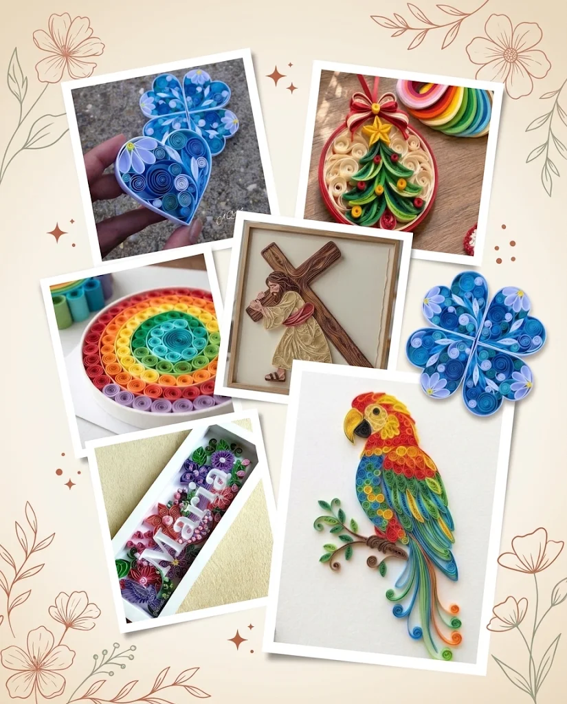
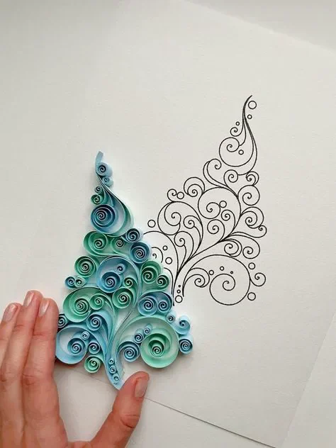
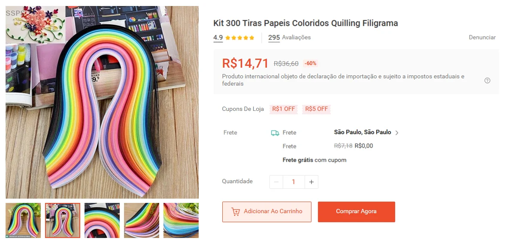
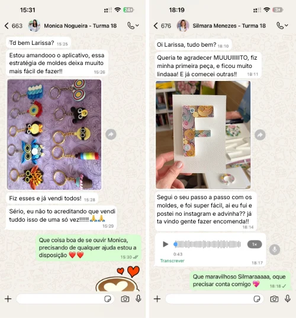
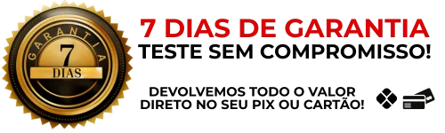
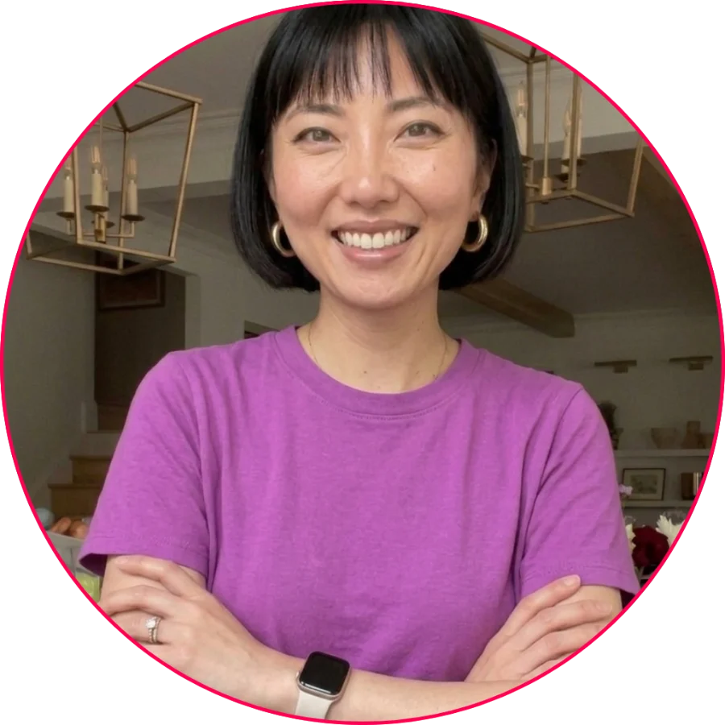

Para quem nunca fez artesanato com papel
Com tiras de papel, cola e um passo a passo em vídeo, você aprende a fazer quadros, flores e lembrancinhas lindas em casa, no seu ritmo e sem gastar quase nada com material.

Responda 6 perguntas rápidas e eu monto um plano de estudos de acordo com o seu tempo e com o tipo de peça que você quer fazer.
Leva menos de 1 minuto
Débora Melo
Eu amo artesanato, faço de tudo. Porém o quilling eu tenho uma paixão maior. As peças são únicas, e não são iguais os outros artesanatos que você demora muito tempo pra ver como fica pronto. Eu demoro 1 hora pra fazer qualquer peça de quilling. Eu amo essa velocidade pra ver o resultado final!
Qual é a sua experiência com Quilling hoje?
Suas respostas ajudam a montar um plano do seu jeito.
Este será seu primeiro curso de Quilling?
Suas respostas ajudam a montar um plano do seu jeito.
Quanto tempo você consegue separar por dia para criar?
Suas respostas ajudam a montar um plano do seu jeito.
O que você mais quer com o Quilling?
Suas respostas ajudam a montar um plano do seu jeito.
E depois de aprender, qual é o seu plano?
Suas respostas ajudam a montar um plano do seu jeito.
Quais peças você gostaria de fazer?
Pode marcar mais de uma
Suas respostas ajudam a montar um plano do seu jeito.
Preciso ter jeito para artesanato?

Não precisa.
No meu método você trabalha em cima de um molde. É só enrolar e modelar as tiras de papel e colar cada uma no lugar indicado, como se estivesse completando um desenho.
Toda peça do curso segue esse mesmo processo. Então, depois que você faz a primeira, as próximas ficam cada vez mais fáceis. Muitas alunas nunca tinham feito nenhum artesanato antes.
E o material, é caro?
Bem pelo contrário.
Você encontra o kit básico na Shopee ou em qualquer armarinho por menos de R$ 15. Com 300 tiras dá para fazer cerca de 30 peças.

Ou seja, você começa gastando muito pouco e sem precisar comprar ferramentas caras.
Veja o que dizem as alunas do Universo do Quilling

Relatos individuais de alunas. Os resultados variam de pessoa para pessoa, e não há garantia de vendas ou renda.
Só mais um instante
Estou montando seu plano de acordo com o seu tempo e com as peças que você escolheu.
Separando as aulas para iniciantes…
Pronto! Seu plano no Universo do Quilling está montado
Veja tudo o que você vai receber:
✅ Videoaulas passo a passo: você me vê fazendo cada peça, do primeiro enrolado ao acabamento, e vai fazendo junto.
✅ Peças para todos os gostos: quadros decorativos e religiosos, flores, cartões, convites, chaveiros, acessórios e lembrancinhas.
✅ Plano no aplicativo: as aulas organizadas de acordo com o tempo que você tem por dia.
✅ Ideias e inspirações: combinações de cores e modelos para você nunca ficar sem saber o que fazer.
✅ Acesso vitalício: assista quando quiser e quantas vezes precisar.
Extra: para quem quer vender
💡 Como calcular o preço de cada peça sem ter prejuízo
💡 Onde e como divulgar para conseguir as primeiras vendas
💡 Como vender nas redes sociais e em marketplaces
💡 Como organizar sua produção para atender mais encomendas
Os resultados variam de pessoa para pessoa. Não há garantia de vendas ou renda.
Algumas das peças que você vai aprender a fazer:

🎁 E, se você entrar hoje, leva 4 bônus de presente:
Bônus 1 Calculadora de preços: você coloca seus custos e ela mostra quanto cobrar por cada peça.
Bônus 2 Assistente de dúvidas 24h: travou em alguma etapa? Pergunte a qualquer hora e receba a orientação na hora.
Bônus 3 Lista de fornecedores: onde comprar material bom, com segurança e pagando menos.
Bônus 4 50 moldes prontos: é só imprimir e começar a praticar.
Pagamento único, sem mensalidade
Universo do Quilling + 4 bônus
R$37,90
Uma única vez, e o acesso é seu para sempre.
Acesso imediato por e-mail • 7 dias de garantia


Prazer, eu sou a Larissa Nakamura
Criadora do Universo do Quilling
Minha história com o artesanato começou olhando minha mãe fazer crochê. Eu achava lindo, mas difícil demais para mim.
Foi aí que conheci o Quilling. Com tiras de papel e um pouco de paciência, eu consegui criar peças que pareciam feitas por uma profissional. Me apaixonei e não parei mais: quadros, lembrancinhas, cartões, convites… ✨
Com o tempo me aperfeiçoei no acabamento e na combinação de cores, e aprendi a vender o que eu fazia. Desde 2018 eu vivo do Quilling, e hoje já ensinei mais de 3 mil alunas.
Criei este curso para te mostrar o caminho que eu gostaria de ter tido no começo: simples, sem enrolação e com cada detalhe mostrado em vídeo.
Veja o que as alunas da primeira turma estão falando:
Luana Martins
O que eu mais gostei é que a Larissa pega e ensina direto e objetiva. Nada daquelas coisas que fica enrolando pra ensinar, ela mostra nas videoaulas como fazer cada passo, são várias peças que você aprende fazer só olhando o vídeo, vendo ela fazer e você vai fazendo igual. Sério, muito simples
Relatos individuais de alunas. Os resultados variam de pessoa para pessoa, e não há garantia de vendas ou renda.
Ficou com alguma dúvida?
Não. O curso foi feito para quem está começando do zero. Você aprende com moldes e acompanha cada etapa em vídeo, fazendo junto comigo.
Em vídeo, do começo ao fim de cada peça. Você pode pausar, voltar e rever quantas vezes quiser.
Com 20 a 30 minutos por dia já dá para acompanhar as aulas e fazer suas peças. O plano se ajusta ao seu tempo, sem pressão.
Sim. Você paga uma única vez, sem mensalidade e sem cobranças futuras.
Assim que o pagamento for aprovado, o acesso chega no e-mail que você usou na compra.
Se não encontrar, confira também a caixa de spam e o lixo eletrônico.
Você tem 7 dias de garantia. Se não ficar satisfeita, é só pedir o reembolso nesse prazo e devolvemos 100% do valor, sem burocracia.
Sua primeira peça pode ficar pronta ainda nesta semana.
Pagamento único de R$ 37,90 • 7 dias de garantia